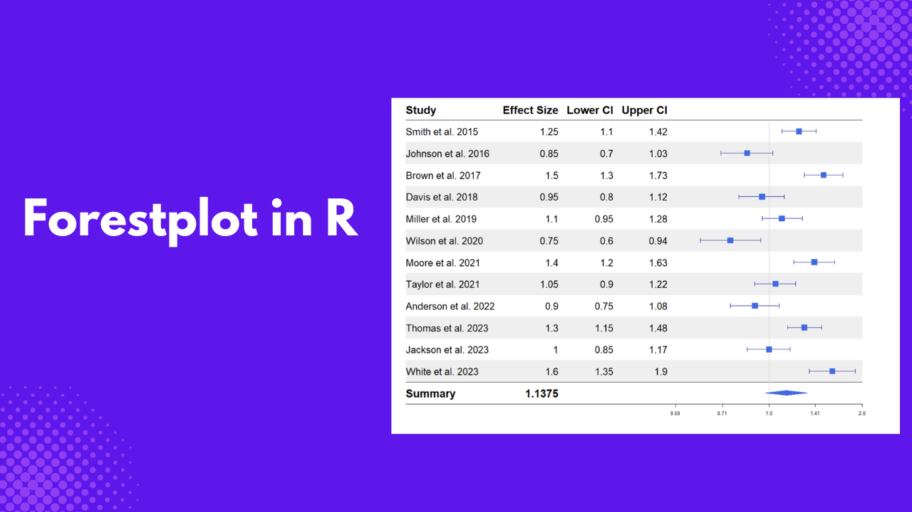
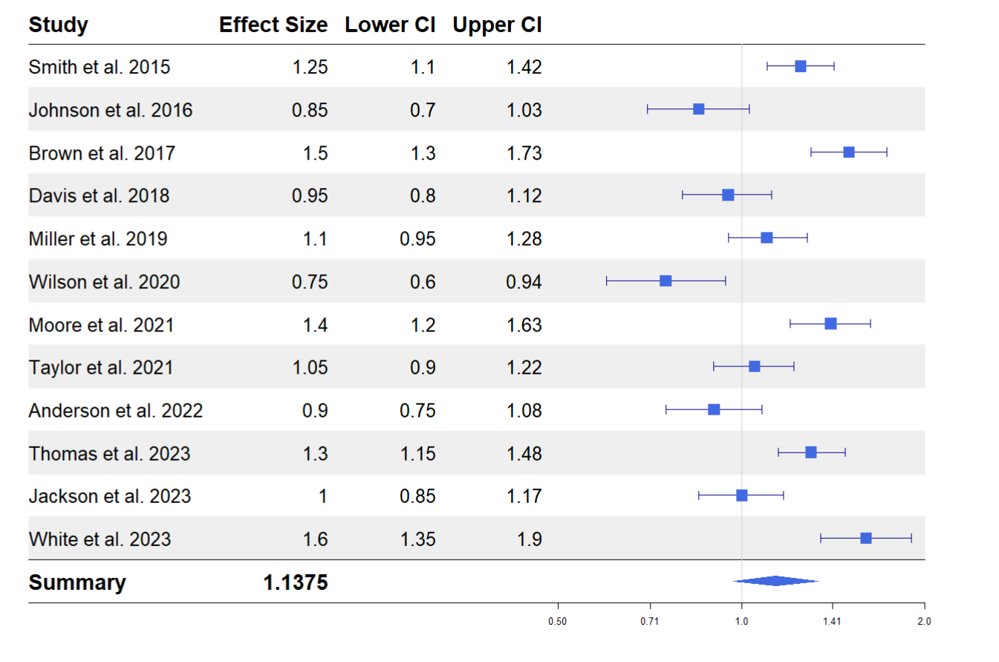

As a researcher trying to compare the results of a particular intervention or treatment from different studies, a forest plot makes it easy to view results from multiple studies. This makes it easy to see variations and trends in an intervention or treatment. In this article, you will learn how to create and customize a forest plot in R using the forestplot package. I will also show you how to read a forest plot.
What is a Forest plot?
A forest plot is a type of graph used in research to show the results of a single topic from multiple studies line by line. Each study is represented by a line and a dot, where the dot shows the main result (how effective a treatment is) while the line shows the range of possible results, also known as the confidence intervals. The forest plot sometimes includes a diamond-shaped plot below, summarizing all the results of the studies. If all the lines are close to each other, then it means the studies agree on that particular topic or there are varying findings on that topic.
Components of a Forest plot
- Study Labels: Located at the left side of the plot, these labels identify each respective study and contain the study author and year.
- Effect Size: This represents the observed effect of an outcome in each study, such as the prevalence of a disease. The position of the point on the plot indicates whether the effect is negative, neutral, or positive.
- Confidence Intervals: Each study shows a horizontal line showing the range of possible outcomes. The narrower the line, the higher the precision of the effect Size.
- No Effect Line: This vertical line is either zero or one, representing no effect. If a study confidence interval crosses this line, the study is not statistically significant.
- Overall Effect (Diamond Shape): This represents the pooled effect from all studies at the plot’s bottom. The center of the diamond shows the overall effect, while the width of the diamond represents the confidence interval. The combined result is statistically significant if the diamond does not cross the no-effect line.

forestplot package in R
forest plot is an r package for creating publication-ready forest plots and works seamlessly with the pipe (|> or %>%) operator. You can install the package by running the code below.
install.packages("forestplot")Here are some critical arguments for plotting a forest plot in R using the forestplot function from the forestplot package.
mean: This takes the column containing the effect size of each study.lower: This takes the lower confidence interval of the effect Size.upper: This takes the higher confidence interval of the effect Size.
You can check for additional arguments by running ?forestplot on your R console.
Creating a Forest plot in R
In this tutorial, we will use fictional data from various studies studying the effect of a particular cancer treatment. First, load the forest plot package.
library(forestplot)Next, we will load the dataset we will work with.
cancer <- read.csv("https://raw.githubusercontent.com/adejumoridwan/datasets/refs/heads/main/cancer_data")
head(cancer)
Copy and paste the following code to create the forest plot and run.
cancer |>
forestplot(
mean = cancer$EffectSize,
lower = cancer$CI_lower,
upper = cancer$CI_upper,
labeltext = c(Study, EffectSize, CI_lower, CI_upper),
xlog = TRUE,
boxsize = 0.25,
vertices = TRUE,) Here are the roles of the arguments specified in the forestplot function:
mean: This argument takes the effect size of the outcome of interest from the dataset.lower: This argument takes the lower confidence interval of the effect size.upper: This takes the upper confidence interval from the effect size.labeltext: This specifies the columns appearing on the forest plot’s left side.xlog: IfTRUE, the marks on the x-axis follow a logarithmic scale.boxsize: Overrides the default size of the box used in the plot.vertices: IfTRUE, apply vertices to the end of the confidence intervals for each study.

Customizing Forest Plot
Adding headers, changing the colors, or changing the theme are various ways of improving the forest plot. All these are done by piping additional functions to the main forestplot() function.
Add column labels
Let’s add column labels to the plot above to create an identification for the columns. Use the pipe operator and pass the following function to the plot.
|>
fp_add_header(Study = c("Study"),
EffectSize = c("Effect Size"),
CI_lower = c("Lower CI"),
CI_upper = c("Upper CI"))The fp_add_header() function assigns new column labels to the dataset column names.

Add a summary
You can add a summary at the bottom of the plot summarizing the whole plot by taking the mean of the effect sizes and the confidence intervals. This will also add a diamond-shaped overall effect below the plot.
|>
fp_append_row(mean = mean(cancer$EffectSize),
lower = mean(cancer$CI_lower),
upper = mean(cancer$CI_upper),
Study = "Summary",
EffectSize = mean(cancer$EffectSize),
is.summary = TRUE)The fp_append_row() adds another row to the forest plot, the mean of the effect size, lower, and upper lower are calculated, and a graph is plotted based on these values. The EffectSize argument adds the value of the overall effect size to the table; you can add the lower and upper confidence intervals by adding the following arguments to the fp_append_row() function.
CI_lower = mean(cancer$CI_lower)CI_upper = mean(cancer$CI_upper)

Add colors and demarcate lines
Let’s add a line to the plot demarcating the column headers from the observations and change the dots’ colors to blue. Then, pass the following function to the forest plot code.
|>
fp_add_lines() |>
fp_set_style(box = "royalblue",
line = "darkblue",
summary = "royalblue")fp_add_lines()adds a line demarcating the headers and summary from the observation rows.fp_set_stylesets a color to the forest plot.- The
boxargument gives a color to the forest plot boxes. - The
lineargument gives a color to the confidence interval lines. - The
summarygives a color to the diamond-shaped plot under the summary row.

Add a theme
You can add a theme to the forest plot to make it easy to read. Add a zebra-styled theme by passing the following function to the forest plot function.
|>
fp_set_zebra_style("#EFEFEF")
Reading a Forest Plot
Each study has a blue square that represents its effect size. An effect size greater than 1 means the study found a positive effect, while less than 1 means a negative effect. The horizontal lines around each square represent the range of values (“confidence interval”) within which we expect the actual effect size to fall 95% of the time. If this line crosses 1, the effect could be neutral (neither positive nor negative).
Some studies, like (Smith et al. 2015) and (Brown et al. 2017), have effect sizes above 1, and their confidence intervals do not cross 1. This implies that they found a significant positive effect.

Studies like (Wilson et al. 2020) have effect sizes below one and confidence intervals that do not cross 1, indicating a negative or weaker effect.

Studies such as (Davis et al. 2018) and (Jackson et al. 2023) have confidence intervals that cross 1, meaning the effect might not be significant.

At the bottom, a diamond shape represents the “summary effect” of all studies combined. In this plot, the summary effect size is about 1.14, with a confidence interval that crosses 1. This means that, overall, when we look at all the studies together, there is no effect

Conclusion
The forest plot is not limited to comparing results between studies. You can also use it to compare predictor variables in a regression analysis, where instead of study labels, you have predictor variables and their respective estimates and confidence intervals.
In this article, you have learned how to create a forest plot in R using the forest plot package and how to customize and derive insights from it. To learn more, check out the package vignette. There are other packages such as forestploter, forester, and if you want a custom forestplot, you can build yours using ggplot2. Here are further resources that dive deep into interpreting a forest plot. Hope you find them helpful.
Tutorial: How to read a forest plot
The 5 min meta-analysis: understanding how to read and interpret a forest plot
Seeing the Forest by Looking at the Trees: How to Interpret a Meta-Analysis Forest Plot
Need Help with Data? Let’s Make It Simple.
At LearnData.xyz, we’re here to help you solve tough data challenges and make sense of your numbers. Whether you need custom data science solutions or hands-on training to upskill your team, we’ve got your back.
📧 Shoot us an email at admin@learndata.xyz—let’s chat about how we can help you make smarter decisions with your data.
Your next breakthrough could be one email away. Let’s make it happen!
Need Help with Data? Let’s Make It Simple.
At LearnData.xyz, we’re here to help you solve tough data challenges and make sense of your numbers. Whether you need custom data science solutions or hands-on training to upskill your team, we’ve got your back.
📧 Shoot us an email at admin@learndata.xyz—let’s chat about how we can help you make smarter decisions with your data.